- 单输出头、去高分辨卷积层、register token and register attention；
- 30% 的 GPU 内存就能达到 VGGT 的效果，15倍于 VGGT 的训练数据，动静场景都有很好的效果；
- feed-forward reconstruction 的性能随模型规模和训练数据规模增大稳定提升；
- 可学习的 registers 可以提升 VLA 模型性能，同时支持语言对齐，表明重建可以促进空间理解；
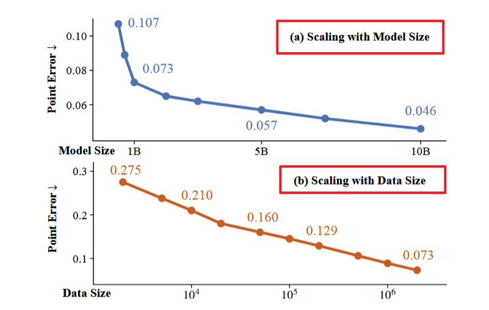
Pipeline
feed-forward reconstruction model 发展得很好（DUSt3R/Mast3R/VGGT/Pi3/DA3），表现出较强的空间几何表征能力，成为多种下游任务的基础表示，这表明 reconstruction 可以作为空间理解的代理任务（proxy task）。而目前其他领域的 foundation model 都验证了通过扩大模型规模、数据规模与训练算力能够持续提升性能（比如 scaling laws for NLM / scaling vision transformers / DINO v3），所以本文想做的是 3d reconstruction 方向的 scalable foundation model。
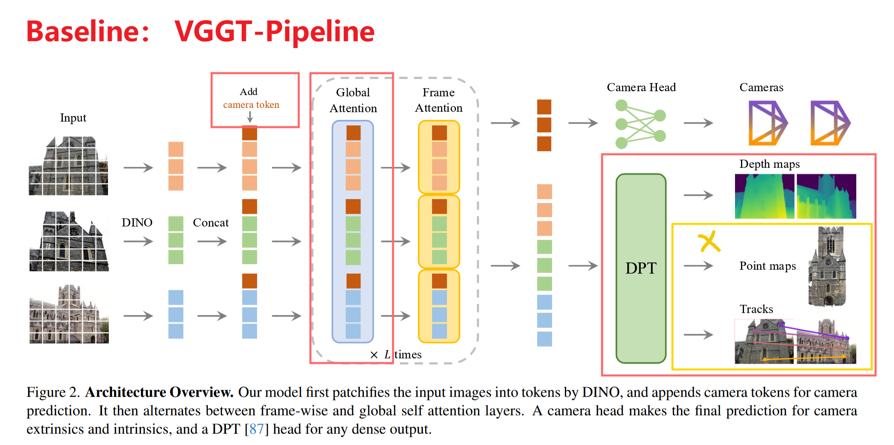
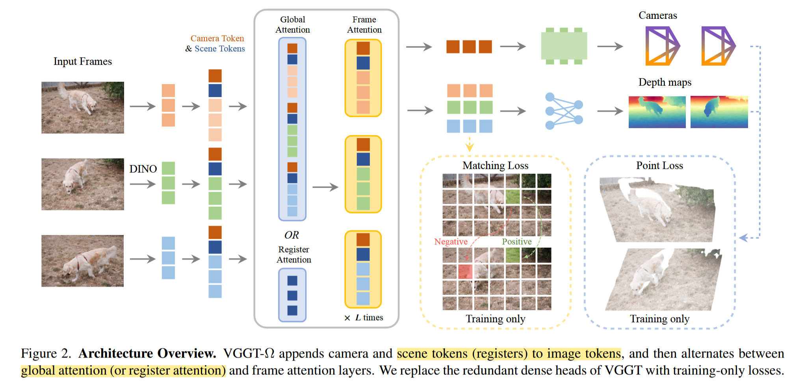
Register Attention
一部分（25%） global attention layer 被替换成只在 register tokens （scene tokens） 之间进行信息交换的 register attention。
- global attention maps are very sparse, 25%的替换不会让结果变坏，同时减少了 16% 的内存占用；
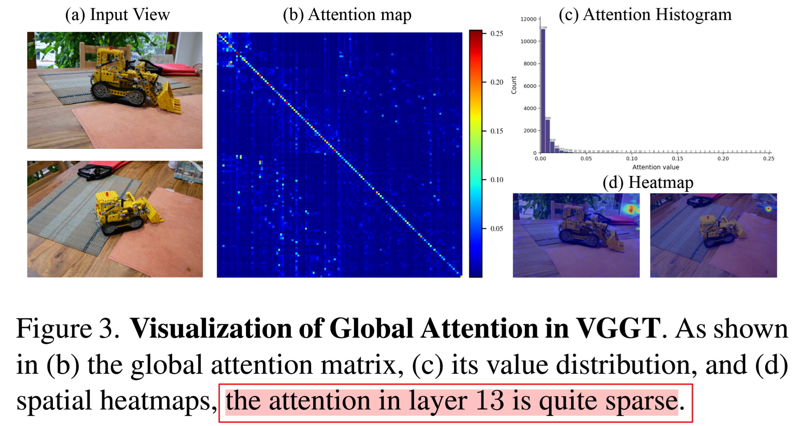
- 原本的 alternative attention 是 frame attention↔︎global attention，frame attention 在单帧内部做 self-attention，global attention 在所有帧所有 token 之间做 self-attention；现在的 alternative attention 是 frame attention↔︎ ( global attention or register attention)。
- global attention: 所有帧的所有 image tokens / camera tokens / scene tokens 互相 attention
- register attention: 只有所有帧的 scene registers 互相 attention。更新后的 registers 通过 frame attention 将全局信息分发回每帧 image tokens。
- register attention 让 registers 跨帧交换信息，随后 frame attention 让这些携带全局信息的 registers 与同帧 image tokens 局部交互，把 global scene-level 信息广播回每帧的 dense tokens。
原 VGGT 推理时缓存了所有 24 层 intermediate tensors，但 prediction heads 只需要 4 层特征，上图实验去掉了不必要缓存，明显降低了 VGGT inference memory
register attention 在推理时主要提升速度，不主要省显存。 FlashAttention 不显式存完整 attention matrix。峰值显存主要来自以下地方，所以去掉 global attention，显存也不大幅下降。
- frame-attention activations；
- FFN intermediates；
- 与 frame/token 数量线性相关的 tensor；
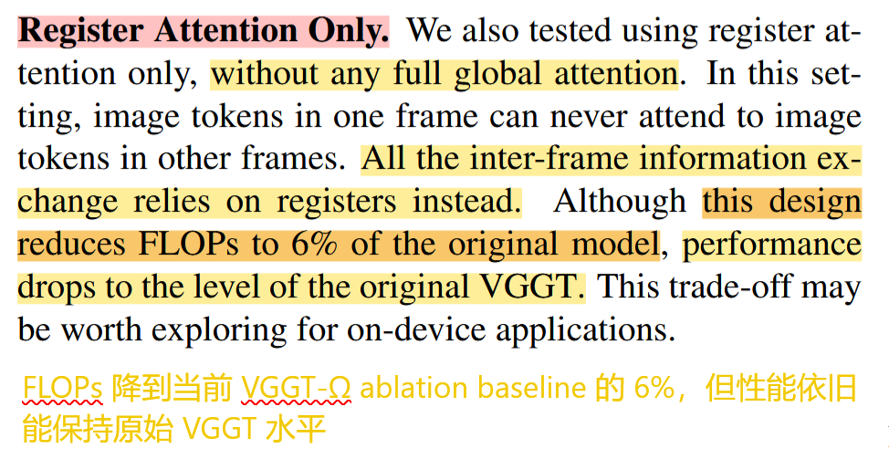
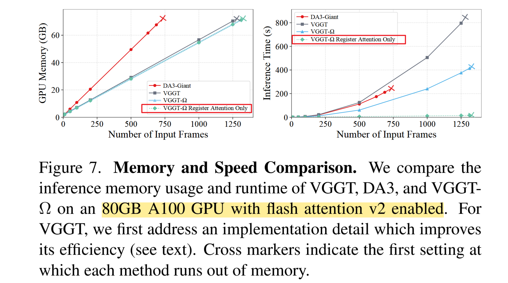
少量的token就能完成信息交换（Spann3R / FastVGGT）。registers 常被认为是辅助信息或者在 infer 的时候就被丢弃了，VGGT-Ω 认为它携带有 global attention。
register attention 中是 camera token + register token。camera head 先对 camera token + register token 做 4 个 self attention block，只取 camera token 输出 9维 的camera encoding。
Decoding 优化
dense head 的高分辨率得卷积层在前向过程中存储激活参数会占用很大的内存，然后实验发现将最消耗内存的卷积层换成一个 MLP 后接一个 pixel shuffle operator 也能达到相近的效果并且减少了很多内存的占用。
砍掉 dense head，只保留一个 depth 的 dense head 和 pose 的 sparse head，同时 dense head 最消耗内存的卷积层还用一个 MLP 替代了。 不在高分辨率特征图跑卷积，在较低分辨率 token grid 上用 MLP 预测一组通道，然后 pixel shuffle 把通道维重新排列成高分辨率空间维。
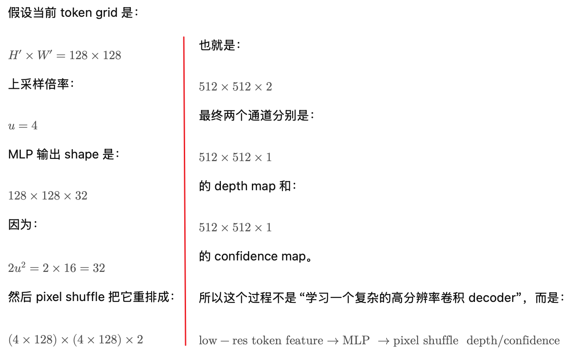
Self-supervised Training
student 是被训练模型，用 loss backward，通过梯度下降更新参数；student 要学最终几何输出和中间表征，目标是：同一个视频，不管颜色变了、顺序乱了、局部被遮住了，student 几何理解都和 teacher 保持一致。
teacher 提供伪监督目标，不 backward，仅通过学生网络参数的 EMA 进行更新。教师参数更新：θT ← mθT + (1−m)θS。不是固定的，也不是人工标注。可以认为 teacher 是student 的慢速平均版本。
不是从零开始自监督学 3D，而是先用有监督数据训练出一个 VGGT-Ω checkpoint，然后在大量 unlabeled videos 上做一种 teacher-student distillation。两个网络都是经过有监督训练的 VGGT- omega 的ckpt 进行初始化的。
图像序列同时送到两个 network 里，但这两个图像序列用的增强策略不一样，并且会打乱帧顺序。把输出（token feature / depth map / camera）重新按照原始顺序对齐之后，进行比较（自监督损失）。
自监督过程中，depth head 和 pose head 是冻结的，只训练 backbone。这样模型主要学习在各种扰动下，内部几何特征要保持稳定。
Training Data
- 原有公开/内部数据约 3M sequences；
- 新 video annotation pipeline 得到约 0.8M high-quality sequences；
- 另有 18M unlabeled videos 用于 self-supervised training。
VGGT-Ω 训练不只跑一遍 supervised，而是：160K supervised + 50K self-supervised + 30K supervised
- 先用有标注 / 伪标注数据训练；
- 中间插入无标注视频的 teacher-student 自监督；
- 最后再回到 supervised 数据上 fine-tune / stabilize。
dynamic video 的适用性：
处理 dynamic videos 的方案不是给动态物体做完整标注，而是在标注阶段把动态区域排除,尽量用静态背景估计 camera 和 depth。
VGGT-Ω 在 dynamic benchmark 上强，不是靠重建动态物体运动，而是靠大量动态视频训练 + 动态区域过滤，学会在动态干扰下从可靠静态结构中估计稳定的 camera 和 depth。
Experiments
Implementation details
128 张 96GB H100 / bf16、gradient checkpointing 、FSD；
200M、500M、1B、10B 四个规模，验证模型规模 scaling；（10B 主要把 hidden size 放大到 4096。1B 层数最多，10B 通道宽度最大）
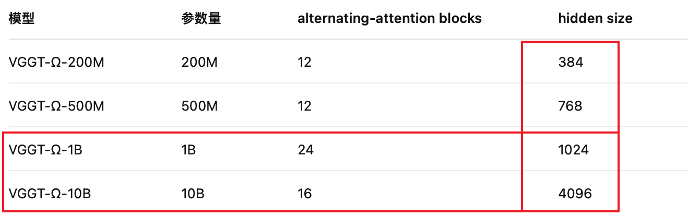
- 通道宽度大：每 token 表达力 up，存储更多复杂几何先验和场景信息；
- 层数多：多轮推理和信息传播能力 up；
- 1B：深、轻、适合 streaming；
- 10B：宽、强、适合做 teacher or 性能上界；
backbone 用 DINOv3 初始化但全量训练；
240K iterations，三阶段：有监督 -- 自监督 -- 有监督校准；
可视化比较
VGGT-Ω 全局效果更好 大规模多样数据学到的 stronger geometric priors megasam 这种 optimization-based dynamic reconstruction 不一定在所有动态 / 复杂场景表现好 航拍、roll motion、弱纹理、稀疏视角，learned prior 可能更可靠。
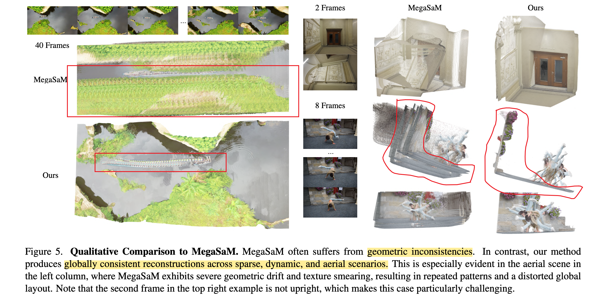
VGGT-Ω pose 和全局效果更好 pose-depth jointly consistent 重复纹理和强相机姿态变化，不容易被局部外观误导。
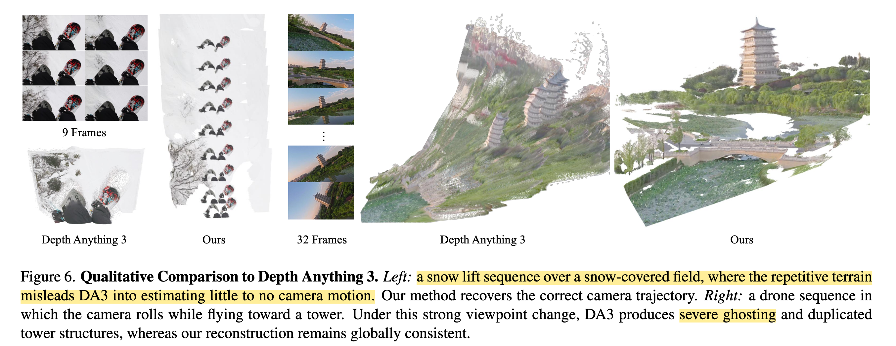
pose & depth
动静都可
- feed-forward 模型在静态场景和宽松阈值下通常不错；
- MegaSaM 这种动态优化方法在 Sintel 这种动态序列上有竞争力，但在 wide-baseline、低纹理场景会退化；
- VGGT-Ω 在静态和动态、严格阈值和宽松阈值下都更稳定。
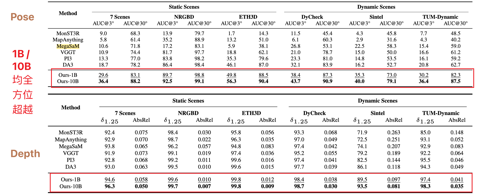
Register tokens 的应用
甚至可以作为：spatial foundation model
- 提升 OpenVLA-OFT 在 LIBERO 上的成功率；
- 与语言描述做 retrieval alignment；
- 作为通用 task token readout interface。
Further insights
几何信息可能主要在 FFN 中。attention -- 信息路由+token mixing； FFN -- 存储和调用学习到的几何先验；但 FFN 中的噪声也可能更多。所以它的数据pipeline很保守，宁愿不学也不能让模型记住错误标签。
camera 的信息不是单有 FFN 控制的，更依赖于全局的多帧关系，所以 streaming reconstruction 的 memory 更需要记住 pose consistency 。
feed-forward reconstruction 不和 optimization 冲突。它可以作为 bundle adjustment 等优化过程的强初始化。
虽然 VGGT-Ω 权衡了卷积层和MLP，但仅用 MLP 的 dense head 还是很有前景。
重建模型可作为工具获取显式的3D信息，例如深度和相机参数。重建可能成为未来统一模型（“全模型”）中的一个组成部分。
生成模型比仅感知的模型更易扩展，而且生成式模型某种程度上可迁移到感知任务。
self-supervised training 只是泛化补强，从零自监督 3D 仍是开放问题；
VGGT-Ω 尝试加一个额外分支预测 invalid regions，希望模型忽略 sky 这种无界区域，避免 sky pixels 被错误贴到前景 point cloud 上，结果：invalid mask 预测很准，但 sky pixels 仍然会出现在前景 depth estimates，可能是这些区域缺少有效监督信号。
不用dino 初始化也行，只是需要4~8倍的迭代次数，也能到相同的效果
一些考虑：
反投影需要时间，但不是限制 VGGT-Ω 做 streaming reconstruction 的主要问题
register only 可能会损失精度，所以 window full attention + long term register memory
可以蒸馏 vggt-omega 的attention / kv cache / ffn 后的 token feature
动态区域处理依赖 learned prior，不是显式动态几何。那把二者结合一下应该更好了吧